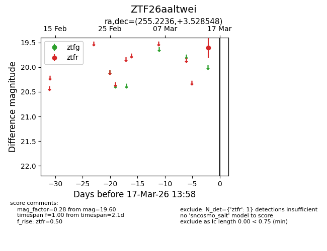
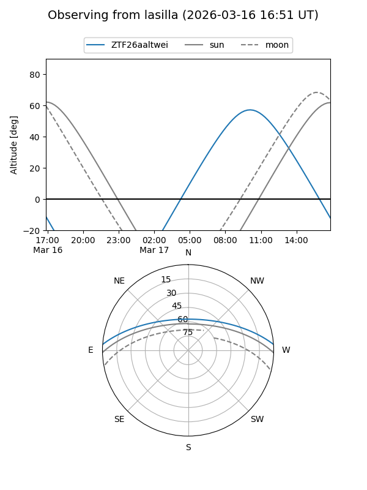
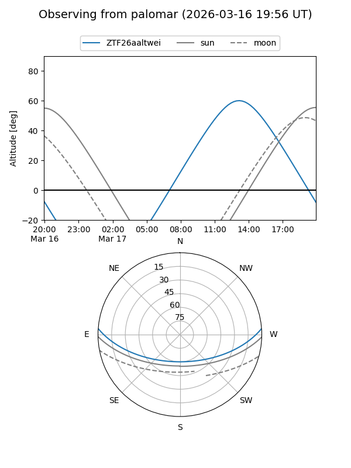

ZTF26aaltwei
Target ZTF26aaltwei at 2026-03-17 14:00
Aliases and brokers:
FINK: link
Lasair: link
ALeRCE: link
alt names
ZTF26aaltwei (ztf,fink_ztf)
Coordinates:
equatorial (ra, dec) = 255.2236,+3.52855
equatorial (HMS+DMS) = 17:00:53.66,+03:31:42.77
galactic (l, b) = (22.9056,+26.11048)
Flags:
Photometry:
last ztfr=19.60
1 ztfr detections
Lightcurve

Visibility


Additional plots